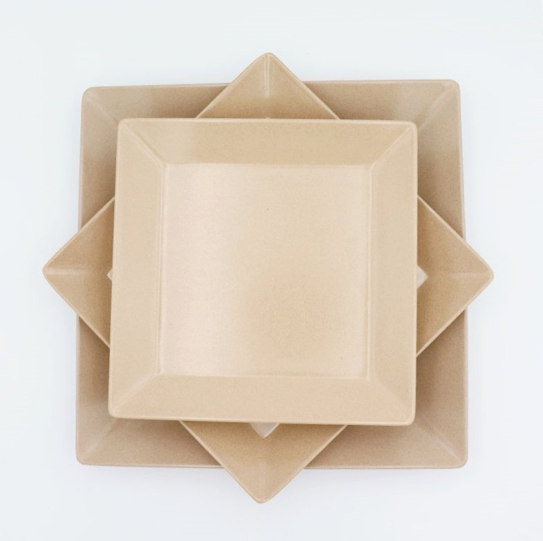
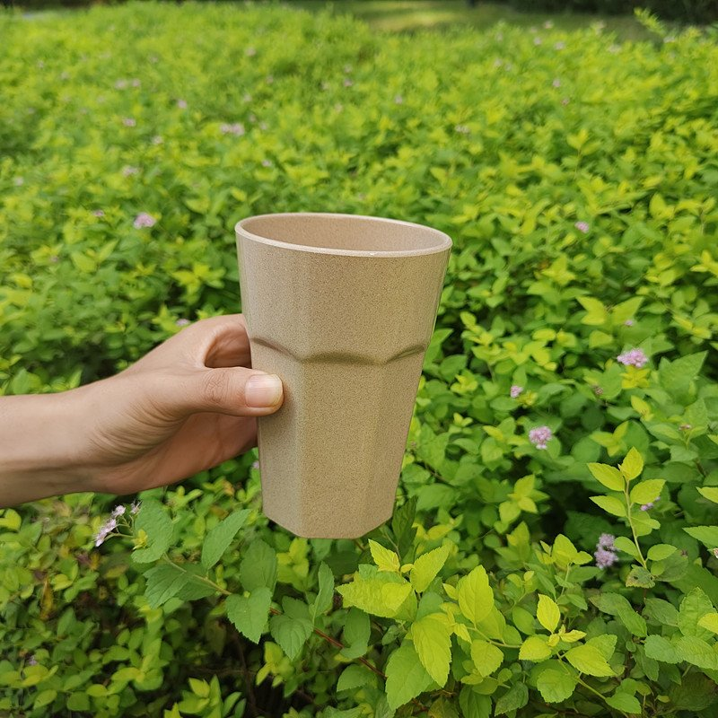

Eco Tableware in Canada: The Importer's Guide to the Plastic Ban and Cottage Season
Canada is the English-speaking market eco tableware suppliers talk about the least — and it shouldn't be. The country's federal single-use plastics ban survived its court challenge in January 2026 and is now firmly in force, its foodservice and park operators have spent four years adapting to it, and its summer cottage and campground culture creates one of the most distinctive tableware demand curves of any market: a short, intense outdoor season when plates, bowls and tumblers live on picnic tables from British Columbia to the Maritimes. If you import or distribute dinnerware in Canada — or you're considering it — here's what the rules actually say, where the demand sits, and how to time your first container.

Reusable plant fiber plates — the category Canadian campground and park retail buyers are moving toward.
Canada's Single-Use Plastics Ban, Explained for Buyers
The federal rules are the Single-Use Plastics Prohibition Regulations (SOR/2022-138), and they prohibit the manufacture, import and sale of six categories of single-use plastic items: checkout bags, cutlery, foodservice ware, ring carriers, stir sticks and straws. The foodservice ware category is the one tableware buyers care about — clamshell containers, lidded containers, boxes, cups, plates and bowls are banned from sale when they're made with or contain expanded or extruded polystyrene foam, PVC, carbon black, or oxo-degradable plastic.
The timeline matters for understanding where the market is now. Manufacture and import of most banned items stopped on December 20, 2022; their sale stopped on December 20, 2023. Ring carriers followed a year later, and even manufacturing these items for export became prohibited in December 2025. There was a legal wrinkle along the way — a lower court had set the regulations aside in late 2023 — but on January 30, 2026, the Federal Court of Appeal upheld the listing that gives the regulations their legal authority, and the ban stands. A government consultation on possible amendments ran through February 2026, so it's worth confirming the current status if a specific edge case matters to your business; nothing in this article is legal advice.
For an importer or distributor, the practical takeaway is simple: Canada's foodservice sector has been operating under these rules for almost three full years. Disposable foodservice ware still exists — paper and molded fiber substitutes filled the gap — but the easy plastic substitutions are done, and the operational costs of disposables keep arriving every week. That's the moment in any regulation cycle when buyers start doing the math on reusables.
Why Reusables Are the Compliant Path
Here's a detail in the Canadian regulations that gets surprisingly little attention: the ban does not cover reusable plastic items. The regulations themselves distinguish single-use from reusable products using performance criteria, and reusable substitutes — including reusable plastic dinnerware — are not subject to the prohibitions. A durable plate or cup that gets washed and returned to service was never the target; the target is the item designed to be thrown away after one meal.
That makes reusable tableware the cleanest compliance story available to a Canadian buyer. There's no waste stream to manage, no per-unit consumable cost, and no need to verify which disposable materials qualify as substitutes and which don't. Rice husk (plant fiber) tableware takes the story one step further: it's made by grinding an agricultural byproduct — the hull left over after rice milling — and molding it under heat and pressure into a dense, durable composite. No BPA, no plastic, warm natural look, light enough for camp staff to pack out and wash by the crate. Our material is SGS tested for food contact, and we supply the migration test reports with every quotation — which is exactly the kind of documentation a Canadian buyer should be collecting from any supplier, whatever the material. For the full background on how the material is made and tested, see our complete rice husk tableware buyer's guide.
Where the Demand Is: Campgrounds, Cottages and the Outdoor Season
Canadian demand for durable tableware doesn't look like the US café market. It clusters around the outdoors. Canada has one of the highest camping participation rates in the world, with millions of household camping trips every summer, a national and provincial park system that spans the country, and a cottage culture — Muskoka and the Kawarthas in Ontario, the Laurentians in Quebec, the Okanagan in British Columbia, the lake country of the Prairies and the Maritimes — where families keep a second set of dishes at the lake for the season.

Rice husk tumblers: the outdoor-season workhorse for Canadian park retail and cottage country.
Each of those settings buys tableware differently, and a distributor who understands the split wins the account. Campground and park operators need shatterproof, lightweight service ware that survives communal washing and drops on gravel — compartment plates and bowls for family meal service, tumblers for drinks by the fire. Cottage and cabin owners shop through general merchandise, outdoor and seasonal retail channels, where a six-piece dinnerware set or a four-pack of tumblers is an easy seasonal purchase. Glamping lodges and wilderness resorts sit between the two: they need presentation-quality dinnerware that photographs well but still handles outdoor abuse, which is where custom colors and molded logos start selling themselves. And once the summer season closes, the same SKUs keep moving through indoor channels — ski resort lodges, university dining halls, and community centers that run fall and winter programs.
The Seasonal Math: Timing a Container for the Canadian Summer
The Canadian outdoor season is short and absolutely fixed: roughly the May long weekend through the September long weekend. Retail buyers place spring orders in January and February, park and campground operators finalize their season stocking by early spring, and anything that arrives after June waits a full year to sell at full price. Working backward from that, an importer's production window for the summer season is essentially November through early February.
Which makes right now — November — the natural planning point. Production placed this month or next runs before the Chinese New Year slowdown in late January and February, when factories in this category typically wind down for two to four weeks. Ocean transit from Chinese ports adds roughly five to six weeks to Vancouver, and more to Toronto and Montreal once rail and inland legs are counted. Order in November, and goods land in January or February with time for customs clearance, inspection and distribution before spring ordering conversations even start. Order in March, and you're negotiating against the season with compressed options. Our container loading and MOQ guide walks through how to plan a mixed container across SKUs so the cube, not the weight, decides what fits — and it includes the seasonal shipping calendar for North American importers in detail.
What to Stock: SKUs That Fit the Canadian Market
Based on the settings above, here's the shortlist we'd suggest a first-time Canadian importer consider for a mixed container:
Campground and park service: compartment plates for meal service, bowls for soups, chili and breakfast, and serving trays for canteen counters. Shatterproof and stackable — two qualities that matter more than looks when the dishwashing happens in a camp kitchen.
Cottage and seasonal retail: square plates and round plates as the core dinner set pieces, plus rice husk tumblers — the single best seasonal retail item in the range, because it's low-priced, giftable, and used outdoors where its story shows.
Year-round channels: rice bowls and coffee cups carry the winter months, and the rice husk chopping board has become a quiet bestseller in Canadian housewares retail — it's the product category where the material's durability is easiest to demonstrate on a shelf. For brands building their own line, the same SKUs support molded or printed logos and Pantone color matching; our private-label launch guide covers the timeline from sampling to a 10-week launch calendar.
Documents to Collect Before You Order
Canadian buyers — like buyers in the US, EU, UK and Australia — should evaluate any eco tableware supplier on paperwork, not promises. Before committing to a container, ask for: food-contact migration test reports from an accredited third party (ours are SGS tested and provided with every quotation), material composition disclosure, care and use instructions for the SKUs you're stocking, and the supplier's stock-item versus custom-production MOQ structure in writing. If you plan to make environmental claims on your own packaging, ask the supplier what the material actually is and can be honestly described as — a straight answer on what rice husk composite is, and is not, is a better signal of supplier quality than any slogan. Our five questions before importing checklist covers the rest of the vetting conversation.
Quick Checklist: Planning a First Canada Container
✅ Confirm the current status of the federal regulations for your specific product categories
✅ Lock production November–early February to beat the Chinese New Year slowdown
✅ Build a mixed container: plates and bowls for volume, tumblers for retail margin
✅ Collect food-contact test reports (SGS tested) and material disclosures in writing
✅ Separate stock-item and custom-logo MOQ tiers before quoting to your retail accounts
✅ Plan landing by February–March to make the spring ordering window
Frequently Asked Questions
Is reusable tableware affected by Canada's single-use plastics ban?
No. The regulations target single-use items across six categories and explicitly distinguish reusable products through performance criteria. A durable plate, bowl or cup that is washed and reused was never in scope. Buyers should still confirm the specific wording for any product they plan to import — the technical guidelines published alongside the regulations are the reference — but reusable dinnerware is broadly the direction the rules push foodservice toward, not away from.
Can rice husk tableware handle cottage and campground use?
That's the use case it's built for. Rice husk composite is shatterproof, lightweight, and molded under high heat and pressure, which is what makes it durable in daily service. It handles hot and cold drinks and washes up with hand washing, or a standard dishwasher cycle. Camp and cottage buyers like that a dropped plate doesn't end the season — and lodge operators like that it photographs like ceramic without the breakage.
What's the MOQ for a first order to Canada?
It depends on stock items versus custom production. Stock SKUs ship from small pilot quantities, which is how most first-time importers test their retail channels; full custom runs with molded logos and Pantone-matched colors carry clearly stated minimums (for example, logo printing starts at 1,000 pieces). Tell us your channel and target SKUs and we'll reply with the current structure, a sample proposal and our test reports.
Planning a container for the Canadian market?
Tell us your channel — campground, park retail, housewares or private label — and your target SKUs. We'll reply with a tailored quotation, our SGS food-contact reports and a sample proposal. Production slots for the spring shipping window fill first.
Send InquiryRelated reading
Three pages worth opening next, depending on what you are deciding.
- Rice husk tableware sourcing guide — the spec sheet, MOQ tiers and container math for a first Canadian order.
- Square rice husk plate — a format that suits cottage-country and campground table service.
- Aussie summer stock-up guide — the southern-hemisphere version of the same seasonal order window.
Published by Kaixin Eco Team · Shenyang Kaixin Technology Co., Ltd. — eco-friendly rice husk (plant fiber) dinnerware manufacturer since 2016, shipping to 40+ countries with full OEM/ODM support. Going deeper: see our Australian summer stocking guide for the southern-hemisphere version of the seasonal math, browse the full rice husk product range, or start from the Kaixin eco tableware homepage.